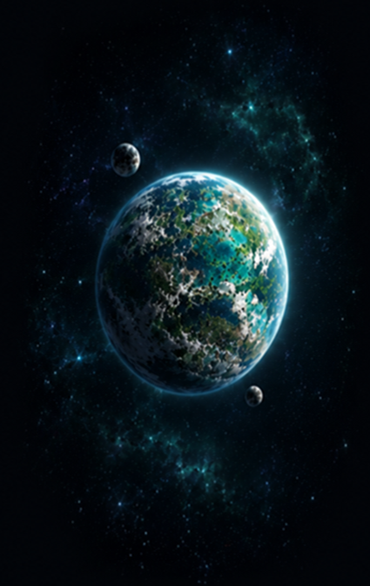
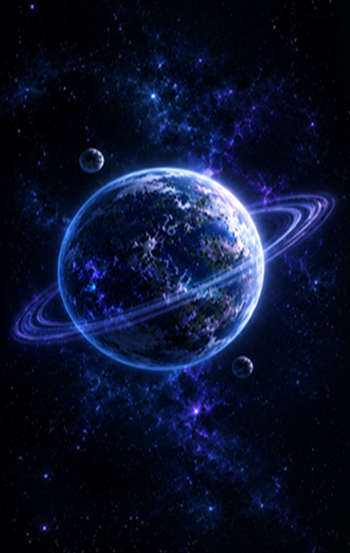
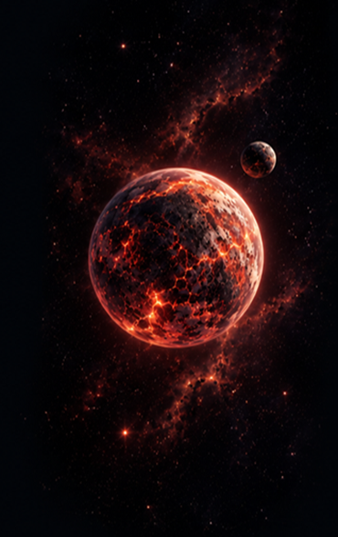

Es un mundo verde y húmedo, lleno de vegetación y animales exóticos. Todos sus habitantes viven en armonía.

Es un planeta frío y luminoso, donde la energía lunar es la fuente de vida. Los paisajes cambian en base a las fases lunares del planeta.

Es un planeta tierra de volcanes activos y cielos rojos. Sus suelos están cubiertos de roca ígnea y minerales ardiendos debido a que cada mes 3 volcanes erupcionan en distintas semanas y regiones del planeta.